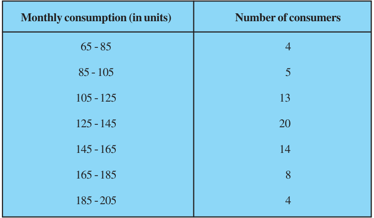
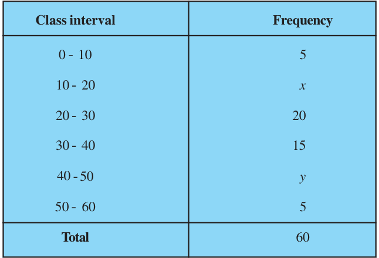
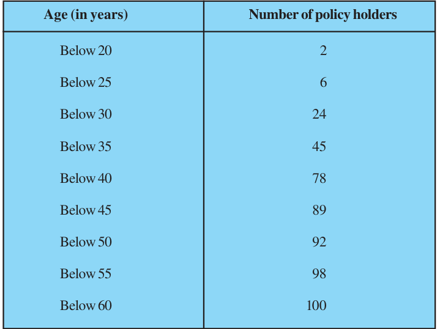
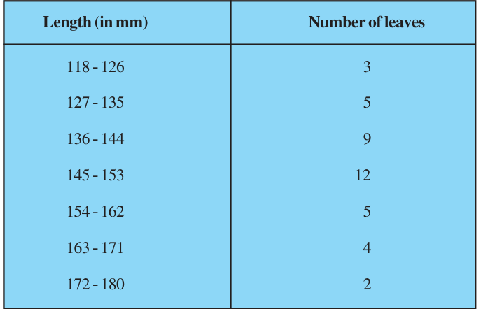
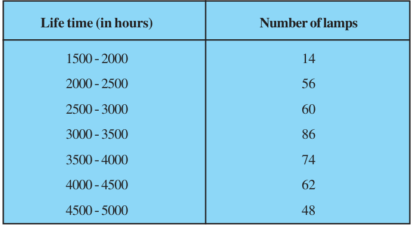
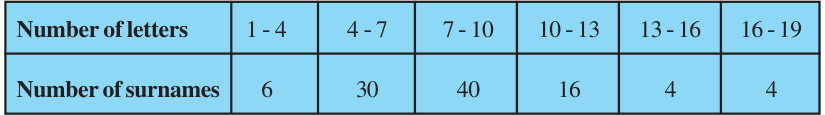
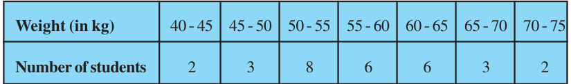

EXERCISE 13.3
- 1.The following frequency distribution gives the monthly consumption of electricity of 68 consumers of a locality. Find the median, mean and mode of the data and compare them.

- 2.If the median of the distribution given below is 28.5, find the values of x and y.

- 3.A life insurance agent found the following data for distribution of ages of 100 policy holders. Calculate the median age, if policies are given only to persons having age 18 years onwards but less than 60 year.

- 4.The lengths of 40 leaves of a plant are measured correct to the nearest millimetre, and the data obtained is represented in the following table :

Find the median length of the leaves.
(Hint : The data needs to be converted to continuous classes for finding the median, since the formula assumes continuous classes. The classes then change to 117.5 - 126.5, 126.5 - 135.5, . . ., 171.5 - 180.5.)
- 5.The following table gives the distribution of the life time of 400 neon lamps :

Find the median life time of a lamp.
- 6.100 surnames were randomly picked up from a local telephone directory and the frequency distribution of the number of letters in the English alphabets in the surnames was obtained as follows:

Determine the median number of letters in the surnames. Find the mean number of letters in the surnames? Also, find the modal size of the surnames.
- 7.The distribution below gives the weights of 30 students of a class. Find the median weight of the students.
